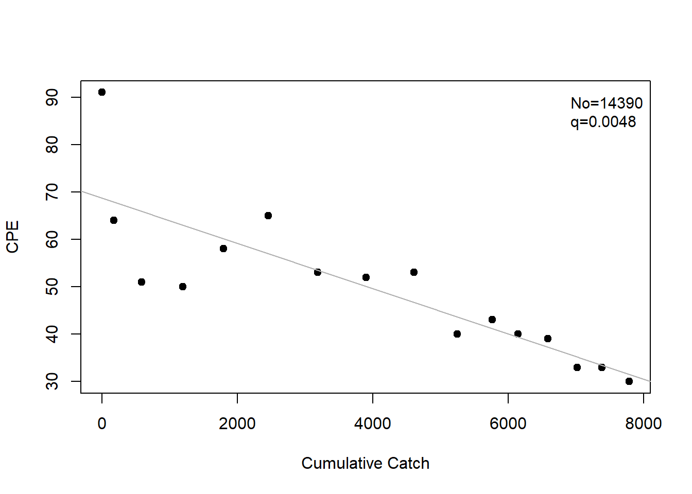
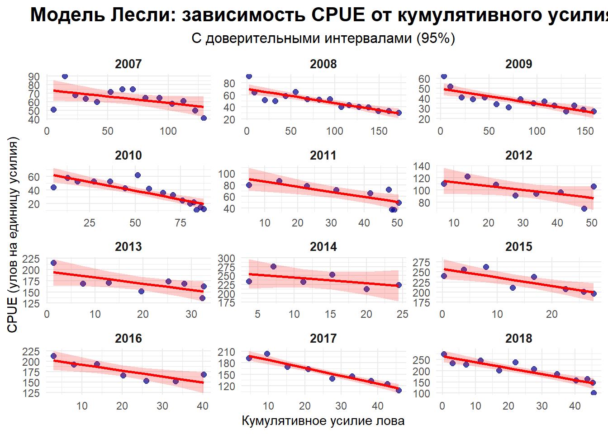
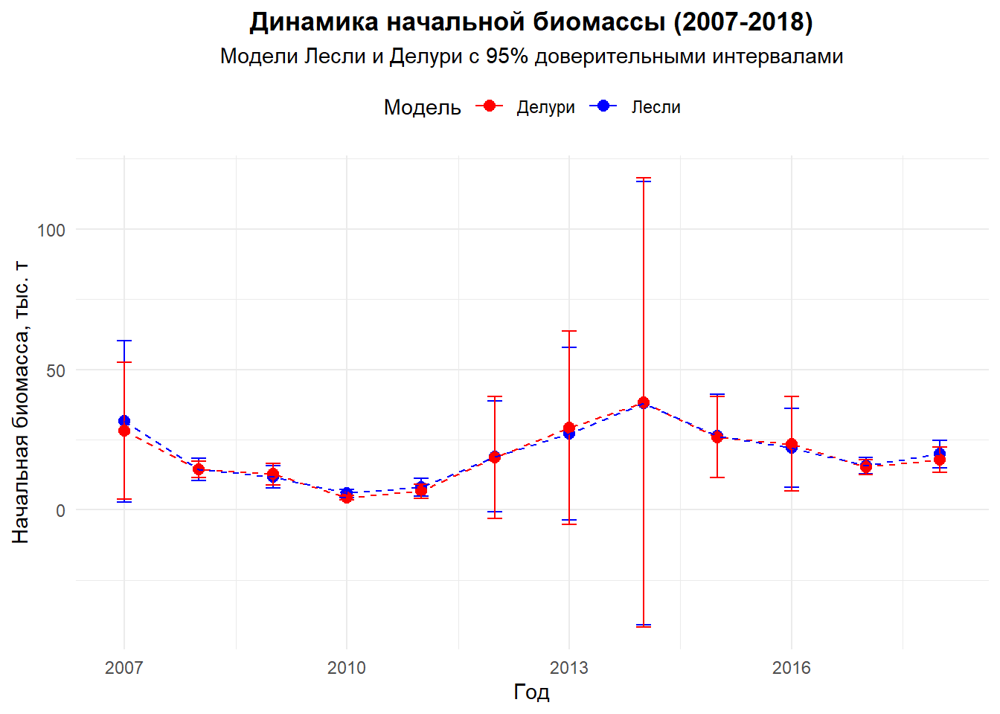

# ========================================================================================================================
# ПРАКТИЧЕСКОЕ ЗАНЯТИЕ: МОДЕЛИ ИСТОЩЕНИЯ ЛЕСЛИ И ДЕЛУРИ
# Курс: "Оценка водных биоресурсов в среде R (для начинающих)"
# Автор: Баканев С. В. Дата: 03.09.2025
# ========================================================================================================================
# 1. ПОДГОТОВКА СРЕДЫ ====================================================================================================
# Установка и подключение необходимых пакетов
# FSA - Fisheries Stock Analysis для моделей истощения
# ggplot2 - для продвинутой визуализации
# dplyr - для манипуляций с данными
# tidyverse - современный подход к обработке данных
if (!require("FSA")) install.packages("FSA")Загрузка требуемого пакета: FSA## FSA v0.10.0. See citation('FSA') if used in publication.
## Run fishR() for related website and fishR('IFAR') for related book.if (!require("ggplot2")) install.packages("ggplot2")Загрузка требуемого пакета: ggplot2if (!require("dplyr")) install.packages("dplyr")Загрузка требуемого пакета: dplyr
Присоединяю пакет: 'dplyr'Следующие объекты скрыты от 'package:stats':
filter, lagСледующие объекты скрыты от 'package:base':
intersect, setdiff, setequal, unionif (!require("broom")) install.packages("broom")Загрузка требуемого пакета: broomif (!require("tidyverse")) install.packages("tidyverse")Загрузка требуемого пакета: tidyverse-- Attaching core tidyverse packages ------------------------ tidyverse 2.0.0 --
v forcats 1.0.0 v stringr 1.5.1
v lubridate 1.9.4 v tibble 3.2.1
v purrr 1.0.4 v tidyr 1.3.1
v readr 2.1.5
-- Conflicts ------------------------------------------ tidyverse_conflicts() --
x dplyr::filter() masks stats::filter()
x dplyr::lag() masks stats::lag()
i Use the conflicted package (<http://conflicted.r-lib.org/>) to force all conflicts to become errorslibrary(FSA)
library(ggplot2)
library(dplyr)
library(broom)
library(tidyverse)
# Установка рабочей директории - укажите путь к папке с данными
setwd("C:/DEPLETION/")
# 2. ЗАГРУЗКА И ПЕРВИЧНЫЙ АНАЛИЗ ДАННЫХ ==================================================================================
# Чтение данных из CSV-файла
# header = TRUE - первая строка содержит названия колонок
# sep = ";" - разделитель точка с запятой (common для European CSV)
LESLIDATA <- read.csv("DATAdep.csv", header = TRUE, sep = ";")
# Проверка структуры данных
# Функция str() показывает:
# - тип объекта (data.frame)
# - количество наблюдений и переменных
# - тип каждой переменной
str(LESLIDATA)'data.frame': 131 obs. of 5 variables:
$ CPUE : num 51 90 68 64 60 72 75 75 65 65 ...
$ CATCH : num 262 826 596 545 564 ...
$ YEAR : int 2007 2007 2007 2007 2007 2007 2007 2007 2007 2007 ...
$ WEEK : int 37 38 39 40 41 42 43 44 45 46 ...
$ EFFORT: num 5.14 9.18 8.77 8.52 9.39 ...# 3. БАЗОВЫЙ АНАЛИЗ МОДЕЛИ ЛЕСЛИ ДЛЯ ОДНОГО ПЕРИОДА ======================================================================
# Фильтрация данных для 2008 года (2007 < YEAR < 2009)
DATA <- LESLIDATA[LESLIDATA$YEAR > 2007 & LESLIDATA$YEAR < 2009, ]
# Построение модели истощения по методу Лесли
# Модель Лесли: CPUE ~ кумулятивное усилие
# Использует линейную регрессию для оценки начальной численности
lesli <- depletion(DATA$CATCH, DATA$EFFORT, method = "Leslie")
# Визуализация модели
# График показывает зависимость CPUE от кумулятивного усилия
plot(lesli)
# Доверительные интервалы для параметров модели
confint(lesli) 95% LCI 95% UCI
No 1.041229e+04 1.836816e+04
q 3.005055e-03 6.548509e-03# Сводная информация по модели
# Включает оценки параметров и статистику качества
summary(lesli) Estimate Std. Err.
No 1.439023e+04 1.854700e+03
q 4.776782e-03 8.260623e-04# 4. РАСШИРЕННЫЙ АНАЛИЗ ПО ГОДАМ (2007-2018) =============================================================================
# Создаем функцию для расчета кумулятивных показателей
# Кумулятивные показатели необходимы для построения моделей истощения
calculate_cumulative <- function(data) {
data %>%
arrange(WEEK) %>% # Сортировка по неделям
mutate(
cumulative_effort = cumsum(EFFORT), # Накопленное усилие
cumulative_catch = cumsum(CATCH) # Накопленный улов
)
}
# Инициализация списка для хранения результатов
leslie_models_list <- list()
# Анализ для каждого года в диапазоне 2007-2018
for (year in 2007:2018) {
# Фильтрация данных по году
year_data <- LESLIDATA %>%
filter(YEAR == year) %>%
na.omit() # Удаление пропущенных значений
# Проверка достаточности данных (минимум 3 наблюдения)
if (nrow(year_data) < 3) {
message(paste("Недостаточно данных для анализа в", year))
next # Переход к следующему году
}
# Расчет кумулятивных показателей
year_data <- calculate_cumulative(year_data)
# Добавление CPUE (улов на единицу усилия)
year_data$CPUE <- year_data$CATCH / year_data$EFFORT
# Построение модели Лесли через линейную регрессию
leslie_model <- try(lm(CPUE ~ cumulative_effort, data = year_data), silent = TRUE)
if (inherits(leslie_model, "try-error")) {
# Обработка ошибок моделирования
year_data$leslie_predicted <- NA
year_data$leslie_lwr <- NA
year_data$leslie_upr <- NA
message(paste("Ошибка в модели Лесли для", year))
} else {
# Получение предсказаний с доверительными интервалами
predictions <- predict(leslie_model, interval = "confidence", level = 0.95)
year_data$leslie_predicted <- predictions[, "fit"]
year_data$leslie_lwr <- predictions[, "lwr"]
year_data$leslie_upr <- predictions[, "upr"]
# Расчет начальной биомассы (No)
# No = -a/b, где a - интерсепт, b - коэффициент кумулятивного усилия
a <- coef(leslie_model)[1]
b <- coef(leslie_model)[2]
No <- -a / b
year_data$No <- No
}
# Сохранение результатов для года
leslie_models_list[[as.character(year)]] <- year_data
}
# Объединение данных всех лет
all_years_leslie <- bind_rows(leslie_models_list, .id = "Year")
# Преобразование Year в фактор с сохранением порядка
all_years_leslie$Year <- factor(all_years_leslie$Year, levels = as.character(2007:2018))
# 5. ВИЗУАЛИЗАЦИЯ РЕЗУЛЬТАТОВ МОДЕЛИ ЛЕСЛИ ==============================================================================
# Построение фасетного графика для всех лет
leslie_facet_plot <- ggplot(all_years_leslie, aes(x = cumulative_effort)) +
geom_point(aes(y = CPUE), size = 2, color = "darkblue", alpha = 0.7) +
geom_ribbon(aes(ymin = leslie_lwr, ymax = leslie_upr),
fill = "red", alpha = 0.2) + # Доверительный интервал
geom_line(aes(y = leslie_predicted), color = "red", linewidth = 1) +
facet_wrap(~ Year, scales = "free", ncol = 3) + # Свободные масштабы для каждого года
labs(
title = "Модель Лесли: зависимость CPUE от кумулятивного усилия",
subtitle = "С доверительными интервалами (95%)",
x = "Кумулятивное усилие лова",
y = "CPUE (улов на единицу усилия)"
) +
theme_minimal() +
theme(
plot.title = element_text(hjust = 0.5, face = "bold", size = 16),
plot.subtitle = element_text(hjust = 0.5, size = 12),
strip.text = element_text(face = "bold", size = 10)
)
# Вывод графика
print(leslie_facet_plot)
# Сохранение графика (раскомментируйте для использования)
# ggsave("Leslie_Model_Facets_2007_2018_with_CI.png", plot = leslie_facet_plot, width = 14, height = 10, dpi = 300)
# 6. СРАВНИТЕЛЬНЫЙ АНАЛИЗ МОДЕЛЕЙ ЛЕСЛИ И ДЕЛУРИ ========================================================================
# Инициализация списка для хранения результатов
results_list <- list()
# Анализ для каждого года
for (year in 2007:2018) {
year_data <- LESLIDATA %>%
filter(YEAR == year) %>%
na.omit()
if (nrow(year_data) < 3) next
# Модель Лесли через FSA
leslie_model <- try(depletion(year_data$CATCH, year_data$EFFORT, method = "Leslie"), silent = TRUE)
if (inherits(leslie_model, "try-error")) {
leslie_no <- leslie_lci <- leslie_uci <- NA
} else {
leslie_ci <- confint(leslie_model)
leslie_no <- coef(leslie_model)["No"]
leslie_lci <- leslie_ci["No", "95% LCI"]
leslie_uci <- leslie_ci["No", "95% UCI"]
}
# Модель Делури через FSA
delury_model <- try(depletion(year_data$CATCH, year_data$EFFORT, method = "Delury"), silent = TRUE)
if (inherits(delury_model, "try-error")) {
delury_no <- delury_lci <- delury_uci <- NA
} else {
delury_ci <- confint(delury_model)
delury_no <- coef(delury_model)["No"]
delury_lci <- delury_ci["No", "95% LCI"]
delury_uci <- delury_ci["No", "95% UCI"]
}
# Сохранение результатов
results_list[[as.character(year)]] <- data.frame(
Year = year,
Model = c("Лесли", "Делури"),
Initial_Biomass = c(leslie_no, delury_no),
LCI = c(leslie_lci, delury_lci),
UCI = c(leslie_uci, delury_uci)
)
}Warning: Estimates are suspect as model did not exhibit a significantly (p>0.05)
negative slope.
Warning: Estimates are suspect as model did not exhibit a significantly (p>0.05)
negative slope.
Warning: Estimates are suspect as model did not exhibit a significantly (p>0.05)
negative slope.
Warning: Estimates are suspect as model did not exhibit a significantly (p>0.05)
negative slope.
Warning: Estimates are suspect as model did not exhibit a significantly (p>0.05)
negative slope.
Warning: Estimates are suspect as model did not exhibit a significantly (p>0.05)
negative slope.
Warning: Estimates are suspect as model did not exhibit a significantly (p>0.05)
negative slope.
Warning: Estimates are suspect as model did not exhibit a significantly (p>0.05)
negative slope.# Преобразование списка в dataframe
results_df <- bind_rows(results_list)
# 7. ВИЗУАЛИЗАЦИЯ СРАВНЕНИЯ МОДЕЛЕЙ =====================================================================================
# График динамики начальной биомассы
biomass_plot <- ggplot(results_df, aes(x = Year, y = Initial_Biomass/1000, color = Model)) +
geom_point(size = 2.5) +
geom_errorbar(aes(ymin = LCI/1000, ymax = UCI/1000), width = 0.2) +
geom_line(aes(group = Model), linetype = "dashed") +
labs(
title = "Динамика начальной биомассы (2007-2018)",
subtitle = "Модели Лесли и Делури с 95% доверительными интервалами",
x = "Год",
y = "Начальная биомасса, тыс. т",
color = "Модель"
) +
theme_minimal() +
theme(
plot.title = element_text(hjust = 0.5, face = "bold"),
plot.subtitle = element_text(hjust = 0.5),
legend.position = "top"
) +
scale_color_manual(values = c("Лесли" = "blue", "Делури" = "red"))
print(biomass_plot)
# 8. ДЕТАЛИЗИРОВАННЫЙ АНАЛИЗ ПАРАМЕТРОВ =================================================================================
# Создание таблиц с параметрами моделей
leslie_all_years <- data.frame()
delury_all_years <- data.frame()
for (year in 2007:2018) {
year_data <- LESLIDATA %>% filter(YEAR == year) %>% na.omit()
if (nrow(year_data) < 3) next
# Анализ для модели Лесли
tryCatch({
leslie_model <- depletion(year_data$CATCH, year_data$EFFORT, method = "Leslie")
leslie_ci <- confint(leslie_model)
leslie_all_years <- rbind(leslie_all_years, data.frame(
Модель = "Лесли",
Год = year,
B0 = round(leslie_model$est["No", "Estimate"], 2),
B0_LCI = round(leslie_ci["No", "95% LCI"], 2),
B0_UCI = round(leslie_ci["No", "95% UCI"], 2),
q = round(leslie_model$est["q", "Estimate"], 6),
q_LCI = round(leslie_ci["q", "95% LCI"], 6),
q_UCI = round(leslie_ci["q", "95% UCI"], 6),
R2 = round(summary(leslie_model$lm)$r.squared, 4)
))
}, error = function(e) {
message(paste("Ошибка в модели Лесли для", year, ":", e$message))
})
# Анализ для модели Делури
tryCatch({
delury_model <- depletion(year_data$CATCH, year_data$EFFORT, method = "DeLury")
delury_ci <- confint(delury_model)
delury_all_years <- rbind(delury_all_years, data.frame(
Модель = "Делури",
Год = year,
B0 = round(delury_model$est["No", "Estimate"], 2),
B0_LCI = round(delury_ci["No", "95% LCI"], 2),
B0_UCI = round(delury_ci["No", "95% UCI"], 2),
q = round(delury_model$est["q", "Estimate"], 6),
q_LCI = round(delury_ci["q", "95% LCI"], 6),
q_UCI = round(delury_ci["q", "95% UCI"], 6),
R2 = round(summary(delury_model$lm)$r.squared, 4)
))
}, error = function(e) {
message(paste("Ошибка в модели Делури для", year, ":", e$message))
})
}Warning: Estimates are suspect as model did not exhibit a significantly (p>0.05)
negative slope.
Warning: Estimates are suspect as model did not exhibit a significantly (p>0.05)
negative slope.
Warning: Estimates are suspect as model did not exhibit a significantly (p>0.05)
negative slope.
Warning: Estimates are suspect as model did not exhibit a significantly (p>0.05)
negative slope.
Warning: Estimates are suspect as model did not exhibit a significantly (p>0.05)
negative slope.
Warning: Estimates are suspect as model did not exhibit a significantly (p>0.05)
negative slope.
Warning: Estimates are suspect as model did not exhibit a significantly (p>0.05)
negative slope.
Warning: Estimates are suspect as model did not exhibit a significantly (p>0.05)
negative slope.# Вывод результатов
print("Таблица параметров модели Лесли по годам:")[1] "Таблица параметров модели Лесли по годам:"print(leslie_all_years) Модель Год B0 B0_LCI B0_UCI q q_LCI q_UCI R2
1 Лесли 2007 31498.37 2705.68 60291.05 0.002323 -0.000097 0.004743 0.2672
2 Лесли 2008 14390.23 10412.29 18368.16 0.004777 0.003005 0.006549 0.7049
3 Лесли 2009 11715.54 7860.93 15570.16 0.004168 0.002409 0.005927 0.6684
4 Лесли 2010 5817.66 4369.39 7265.92 0.010571 0.006406 0.014736 0.6791
5 Лесли 2011 7968.21 4793.42 11143.00 0.011168 0.005162 0.017174 0.7342
6 Лесли 2012 18913.61 -844.81 38672.03 0.006095 -0.001239 0.013430 0.4080
7 Лесли 2013 27185.11 -3514.76 57884.98 0.006883 -0.001716 0.015481 0.3900
8 Лесли 2014 37864.24 -41069.72 116798.19 0.006719 -0.008193 0.021630 0.2812
9 Лесли 2015 26234.94 11351.15 41118.72 0.009624 0.003571 0.015677 0.7161
10 Лесли 2016 22168.22 8133.31 36203.14 0.009094 0.002560 0.015628 0.7191
11 Лесли 2017 15614.16 12692.12 18536.19 0.012778 0.009719 0.015838 0.9330
12 Лесли 2018 19825.00 14882.60 24767.40 0.012953 0.008866 0.017039 0.8330print("Таблица параметров модели Делури по годам:")[1] "Таблица параметров модели Делури по годам:"print(delury_all_years) Модель Год B0 B0_LCI B0_UCI q q_LCI q_UCI R2
1 Делури 2007 28236.12 3911.96 52560.28 0.002584 -0.000016 0.005184 0.2810
2 Делури 2008 14297.12 11422.52 17171.73 0.004778 0.003382 0.006174 0.7938
3 Делури 2009 12725.30 8827.49 16623.12 0.003720 0.002219 0.005220 0.6881
4 Делури 2010 4393.17 3603.17 5183.16 0.016319 0.010545 0.022094 0.7241
5 Делури 2011 6583.20 4041.91 9124.50 0.014016 0.005647 0.022386 0.6914
6 Делури 2012 18610.09 -3184.94 40405.13 0.006133 -0.002249 0.014516 0.3482
7 Делури 2013 29170.84 -5308.38 63650.06 0.006347 -0.001969 0.014662 0.3676
8 Делури 2014 38177.41 -41839.92 118194.74 0.006637 -0.008199 0.021473 0.2783
9 Делури 2015 25898.41 11522.67 40274.15 0.009716 0.003691 0.015740 0.7218
10 Делури 2016 23437.65 6629.31 40245.99 0.008496 0.001564 0.015428 0.6650
11 Делури 2017 15112.98 12490.27 17735.70 0.013178 0.010103 0.016254 0.9362
12 Делури 2018 17743.61 13271.76 22215.47 0.014745 0.009658 0.019833 0.8066# Сохранение результатов
write.csv(leslie_all_years, "Leslie_parameters_all_years.csv", row.names = FALSE)
write.csv(delury_all_years, "Delury_parameters_all_years.csv", row.names = FALSE)
# ========================================================================================================================
# ИНТЕРПРЕТАЦИЯ РЕЗУЛЬТАТОВ:
# 1. Модель Лесли: CPUE = a + b * (кумулятивное усилие)
# 2. Модель Делури: ln(CPUE) = a + b * (кумулятивное усилие)
# Параметры:
# - B0 (No): начальная биомасса/численность
# - q: коэффициент уловистости
# - R2: показатель качества модели (0-1)
# Доверительные интервалы показывают точность оценок
# ========================================================================================================================